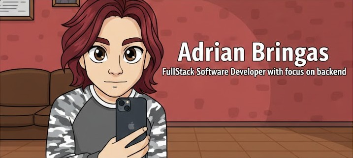

About Me
A little bit about my professional life

I have always been passionate about logic and mathematics, so I decided to change the direction of my professional life toward IT, because programming involves a great deal of logic and, eventually, more specialized knowledge that requires solid mathematical foundations.
It has been a long journey. Since I obtained my degree, I knew I wanted to do something different. The idea of studying mathematics came to my mind when I was in my fifth semester at university, but due to some experiences I had, I decided to enter the IT industry. At the beginning, it was hard to choose how to do so. Then I found an NGO called Generation. It turned out that they offered a fully remote and free bootcamp in full-stack software development using Java. The concept immediately caught my attention, and I enrolled right away. During the program, I learned front-end development using technologies such as HTML, CSS (with Bootstrap), and JavaScript, as well as back-end development using MySQL (Workbench), Java (with Spring Boot), and Postman.